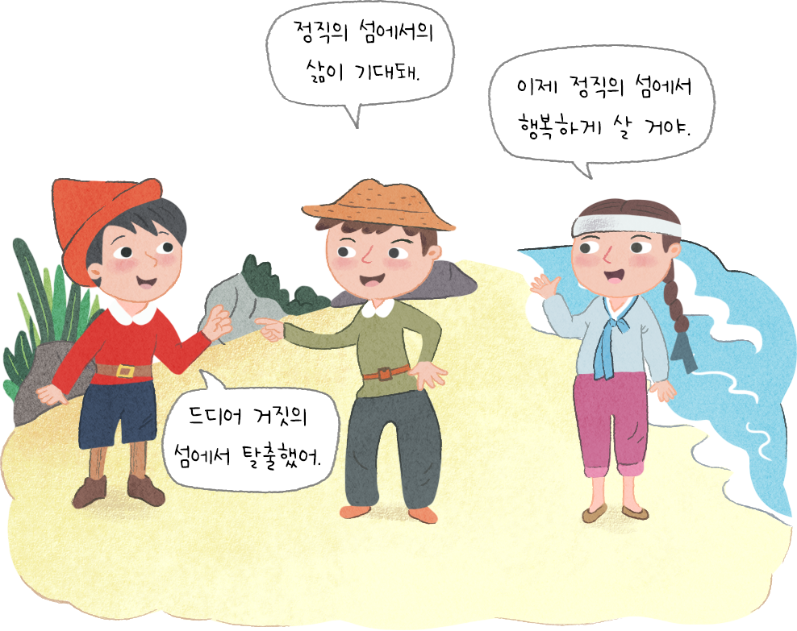

- 물음
- 활동
-

자신과 남을 속이지 않는 삶을 살게 될 것 같습니다.
-
양치기 소년은 정직의 섬에서 자신의 장난스러웠던 거짓말을 뉘우치고 다시 마을로 돌아갈 수 있는 기회를 얻었습니다. 그리고 고민 끝에 정직의 섬에 있던 마법의 거울을 통해 자신이 살던 마을 사람들은 양치기 소년의 말과 행동이 예전과 달리 신중해지고 사람들을 진실하게 대하는 모습에 조금 놀랐답니다. 마을 사람들이 처음부터 그를 믿기는 어려웠지만 양들을 정성껏 돌보며 누가 보지 않아도 정해진 시간에 스스로의 일을 해내는 양치기 소년의 행동은 마을 사람들의 마음을 움직였어요. 마침내 그는 다시 사람들의 믿음을 얻고 항상 당당하고 떳떳하게 삶을 살아가게 되었답니다.